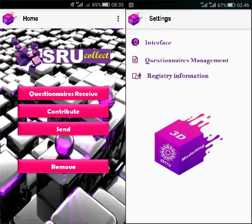
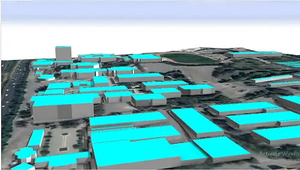
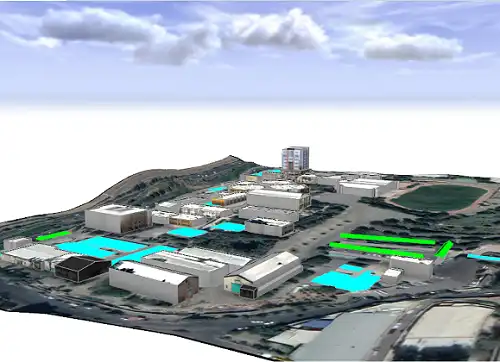

-

Ali Khosravi Kazazi
Shahid Rajaee University
-

Farhad Hosseinali
Shahid Rajaee University
Shahid Rajaee University
Shahid Rajaee University
Considering technological developments, 3D city models have become valuable in various domains such as emergency services, facilities management, tourism, and entertainment along with several applications such as the estimation of solar irradiation, routing, lighting simulations, etc. However, many cities in the world, especially in developing countries, still suffer from a lack of 3D city models. It seems that the main reason for this deficiency is that 3D city models are expensive. Furthermore, acquiring semantic and thematic data as an indispensable part of 3D city models is an exhausting and time-consuming task. Nowadays, a geospatial data collecting technique, which is an inexpensive and prompt solution, has been developed. This technique is based on the crowdsourcing concept and is recognized as Volunteered Geographic Information (VGI). In this paper, we have used VGI as a free and prompt technique for data gathering to solve the abovementioned problems in the Shahid Rajaee Teacher Training University as the study area. We gathered the minimum required data for creating a 3D city model based on the CityGML standard as the most well-known and acceptable standard by VGI. Also, 3DcityDB which supports CityGML was used for data storage task. In order to collect the required data, an Android mobile application was developed based on Open Data Kit (ODK). In this study, the volunteers were asked to provide their estimations of the heights of buildings as well as some other spatial and attribute data. Consequently, a 3D city model was produced based on the CityGML standard that achieved LOD 1 and 2. For validation, the heights of buildings obtained from VGI were compared to the accurately measured heights. The calculated RMSE for this comparison was 1.33 meters, proving the abilities of VGI in collecting reliable datasets.

The study area's foot-print
Participatory mapping application
3-dimensional model in a low level of details
3-dimensional model in a higher level of details